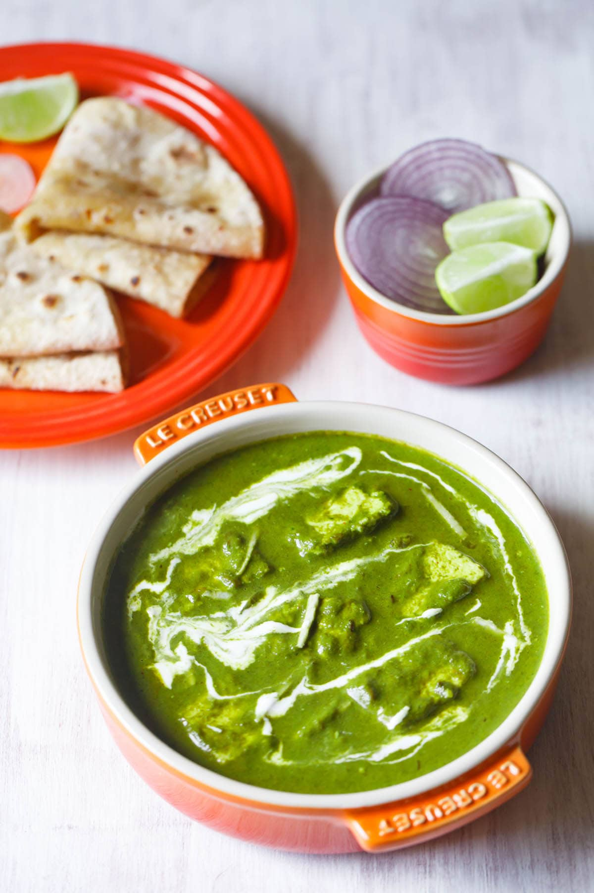

Palak Paneer

Description
Palak paneer is a popular dish from North India (Punjab).
Here soft paneer (Indian cottage cheese) cubes are simmered
into smooth, creamy, medium spicy, vibrant green spinach gravy.
This tastes exactly restaurant style Palak paneer. If you are
one of them who thinks that any spinach dish is bland and tasteless,
then I bet you haven't tried this recipe. Try it once, I am sure you
will love it.
Ingredients
- Spinach
- Onion
- Oil
- Salt
- Cashews
- Garlic
- Ginger
- Green chili
- Tomato
- Black salt
- Garam masala
- Kasoori methi
- Heavy cream
- Paneer
Steps
- To a pot of boiling water, add little salt and then
spinach leaves to it. Blanch the spinach leaves for 2 to 3
minutes until wilted.
- Take them out and put them in ice cold water. This helps
the leaves in retaining their green color.
- To a blender, add the blanched spinach along with tomato,
3 cloves of garlic, ginger and green chili. Puree to a smooth paste
and set aside.
- Heat a pan on medium heat. Once hot, add the oil and then add the
remaining 2 cloves of chopped garlic. Sauté for few minutes until it
starts changing color.
- Then add the chopped onions. Cook the onion for 2 to 3 minutes until
soft and translucent.
- Add in the prepared spinach puree and mix. Also add around 1/2 cup water
at the point.
- Cover the pan and let it cook for 10 minutes on medium heat. The spinach
will bubble a lot. Stir at regular intervals to avoid sticking at the
bottom.
- Once the spinach is cooked, add the garam masala, turmeric powder,
red chilli powder and salt. Mix and cook for 1 minute. You may also
add ½ teaspoon of sugar at this point if you like.
- Then add the heavy cream and mix.
- Stir in the paneer and mix. Let the curry simmer for 3 to 4 minutes.
Switch off the flame, add lemon juice and kasuri methi and mix.
- Serve palak paneer hot with naan or roti or rice.